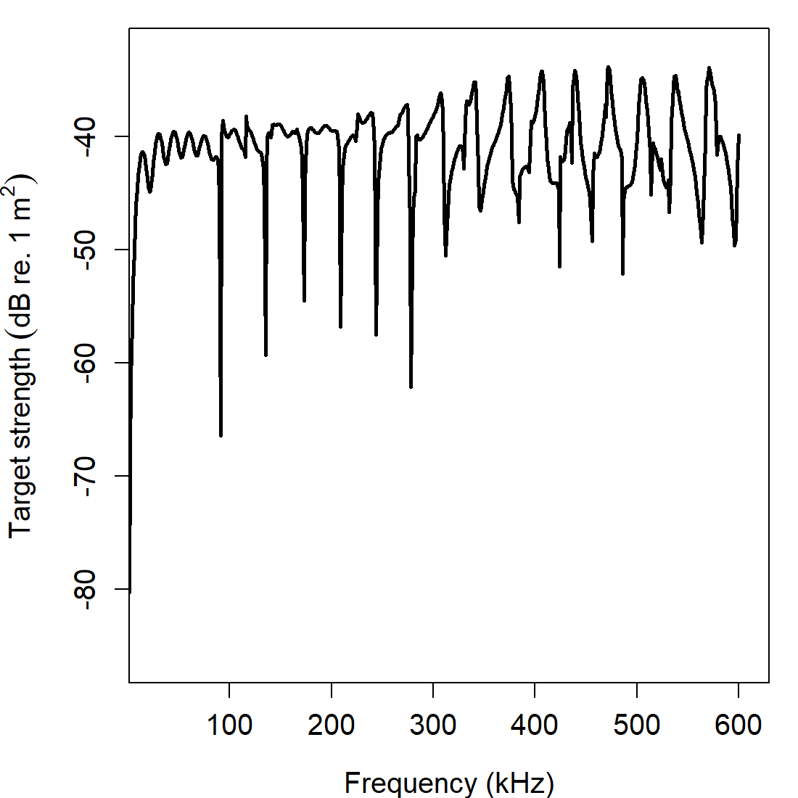
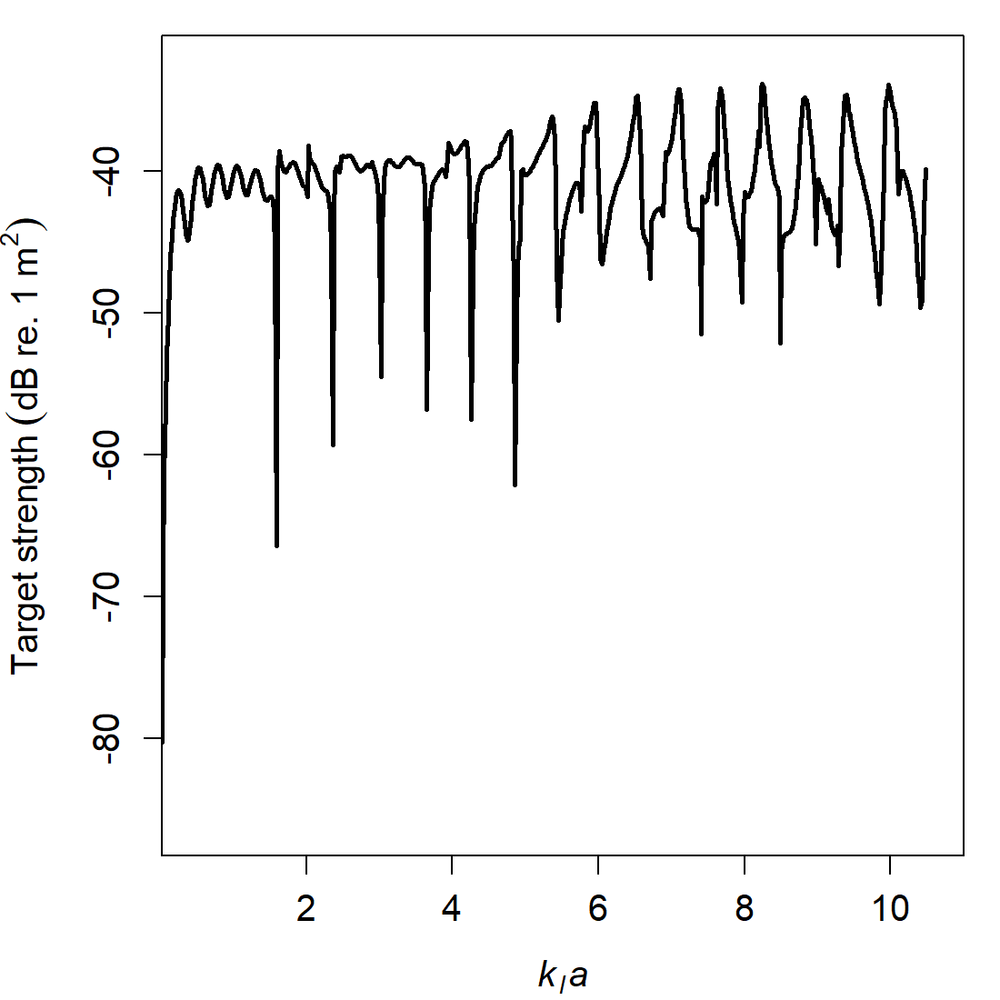
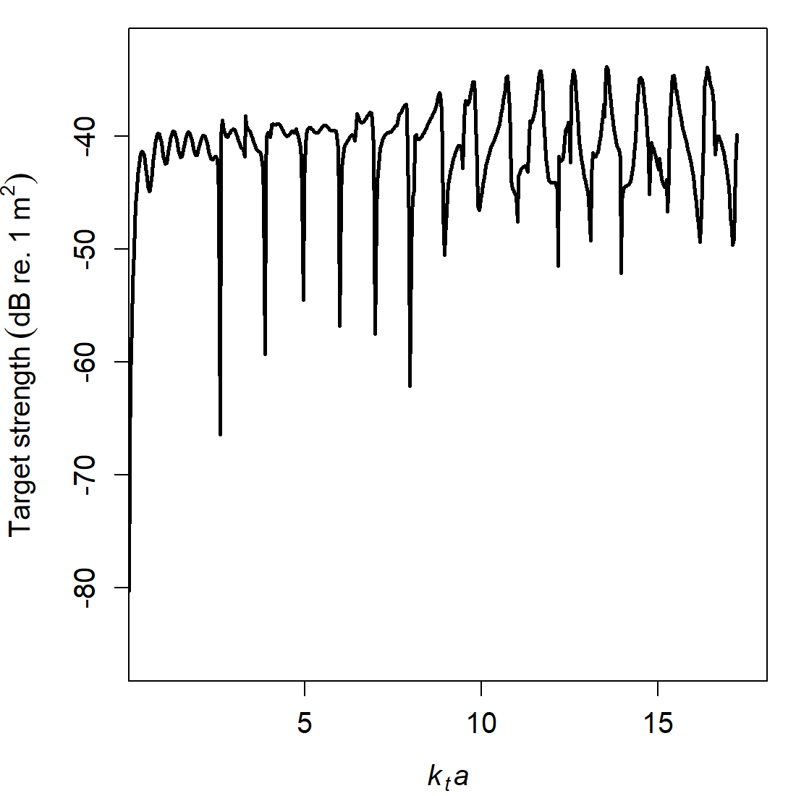
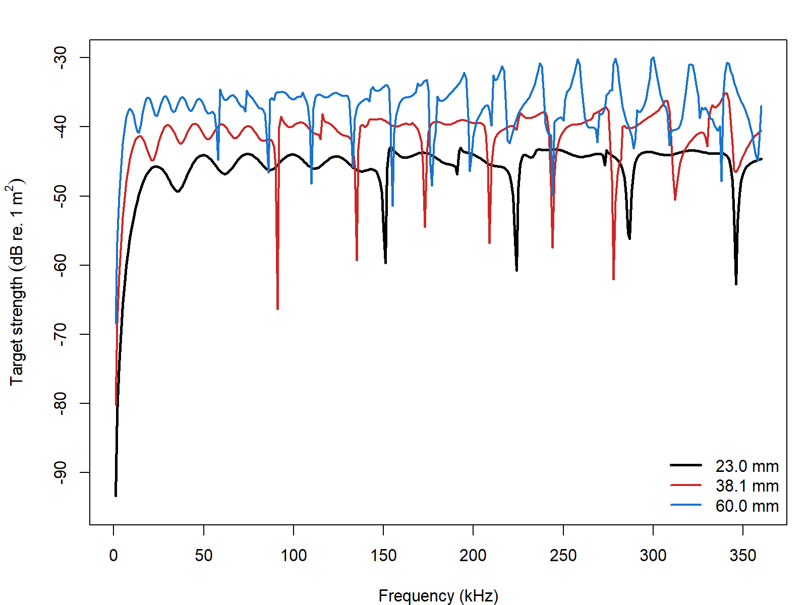
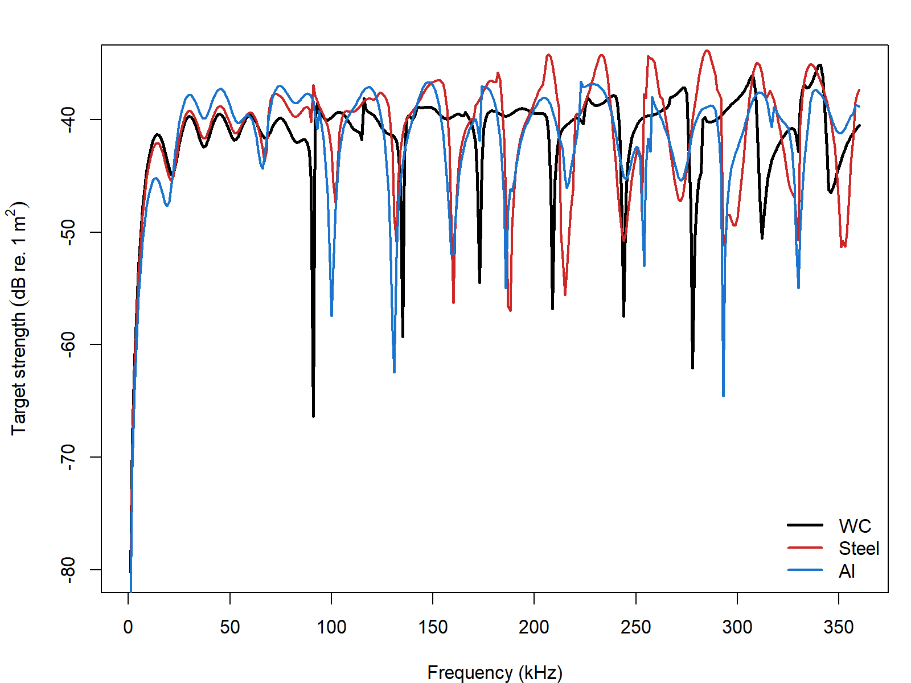
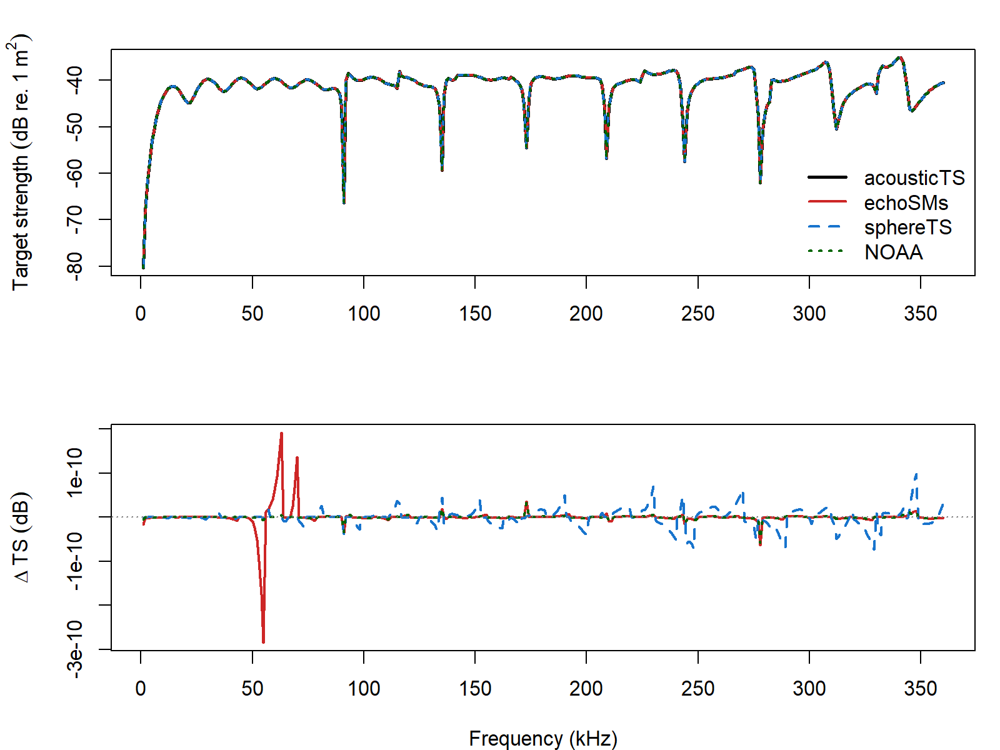

Target strength for a calibration sphere
Source:vignettes/calibration/calibration-implementation.Rmd
calibration-implementation.RmdacousticTS implementation
Benchmarked Validated
Model-family pages: Overview Implementation Theory
The calibration workflow in acousticTS is designed to be
short and explicit. A user first creates a calibration sphere object,
then evaluates the calibration model over a chosen frequency grid, and
finally inspects or plots the stored results. The object-based design is
useful here because the sphere dimensions, elastic material properties,
medium properties, and model outputs remain attached to the same object
throughout the workflow.
Calibration sphere object generation
The calibration target is represented by the CAL object
class. This object stores metadata, model parameters, model results,
body properties, and shape-specific information in one place. In
practical terms, that means the sphere can be built once and then reused
for plotting, comparison, and repeated model runs without reconstructing
the target from scratch each time.
A calibration sphere object is created with
cal_generate(). The two most important user-facing
arguments are material and diameter. The
default diameter is 38.1 mm, written in the package as
38.1e-3 m, and the diameter input is always interpreted in
meters. The material argument provides several common
defaults whose longitudinal sound speed, transverse sound speed, and
density are supplied automatically.
| Material | Argument value | c_\ell | c_\tau | \rho |
|---|---|---|---|---|
| Tungsten carbide | "WC" |
6853 | 4171 | 14900 |
| Aluminum | "Al" |
6260 | 3080 | 2700 |
| Stainless steel | "steel" |
5610 | 3120 | 7800 |
| Brass | "brass" |
4372 | 2100 | 8360 |
| Copper | "Cu" |
4760 | 2288.5 | 8947 |
If a sphere material is not one of those defaults, the object can still be created by supplying the material properties directly. The important point is that the calibration sphere is treated as a solid elastic target, so both longitudinal and transverse wave speeds are part of the definition.
When using the defaults:
library(acousticTS)
cal_sphere <- cal_generate()
# equivalent to: cal_generate(material = "WC", diameter = 38.1e-3)Calculating a target-strength spectrum
Once the calibration sphere object has been created, target strength
is computed with target_strength(). In this workflow, the
core inputs are object, frequency, and
model. The object argument is the
CAL object, frequency is usually a vector of
values in Hz, and model should be
"calibration" or "SOEMS".
The most important practical point is that
target_strength() returns the updated object. Reassigning
to the same object is convenient when the goal is to keep working with a
single sphere definition. Assigning to a new object is useful when
several model runs or parameter sets need to be kept side by side.
frequency <- seq(1e3, 600e3, 1e3)
cal_sphere <- target_strength(
object = cal_sphere,
frequency = frequency,
model = "calibration"
)
cal_sphere_copy <- target_strength(
object = cal_sphere,
frequency = frequency,
model = "calibration"
)Inspecting model results
Model results can be inspected visually or accessed directly with
extract(). Both approaches are useful. Plotting is the
fastest way to check whether the spectrum behaves plausibly, while
direct extraction is the best way to compare outputs, build custom
graphics, or verify the numerical quantities being stored.
Plotting results
The plot() method can be used to display either the
sphere geometry or the modeled output. For calibration work, the most
common use is type = "model", which plots the stored
target-strength spectrum. The optional x_units argument can
also be used to display the horizontal axis in terms of frequency or in
terms of radius-scaled wavenumber.



Those alternatives are useful for different reasons. Frequency is the natural axis for practical calibration work, while the radius-scaled wavenumber views are useful when comparing spheres of different diameters or different materials on a common nondimensional scale.
Accessing results
The model results can also be accessed directly with
extract(). For the calibration workflow,
feature = "model" returns a data frame containing the
stored spectral outputs.
## frequency ka f_bs sigma_bs TS
## 1 1000 0.0810226 9.735761e-05 9.478503e-09 -80.23260
## 2 2000 0.1620452 3.853270e-04 1.484769e-07 -68.28341
## 3 3000 0.2430678 8.518051e-04 7.255720e-07 -61.39319
## 4 4000 0.3240904 1.477241e-03 2.182242e-06 -56.61097
## 5 5000 0.4051130 2.235373e-03 4.996892e-06 -53.01300
## 6 6000 0.4861356 3.093986e-03 9.572752e-06 -50.18963The extracted data frame includes the working frequency grid, the
ambient acoustic-size variable ka, the reported
backscattering length f_bs, the backscattering
cross-section sigma_bs, and target strength
TS. In the current calibration workflow, these quantities
are related by:
\sigma_{\mathrm{bs}} = |f_{\mathrm{bs}}|^2, \qquad \mathit{TS} = 10 \log_{10}\left(\sigma_{\mathrm{bs}}\right).
That relationship is worth stating clearly because calibration literature is not always written with the same normalization. The implementation page should therefore be read together with the theory page when the dimensional meaning of the reported quantities matters.
Comparison workflows
One advantage of the calibration workflow is that it becomes easy to compare spheres that differ only in diameter or material. Those comparisons are useful because they show how the resonance pattern shifts when the sphere size changes and how the elastic response changes when the material parameters change.
Diameter comparisons

Diameter changes alter the acoustic-size scaling directly, so the resonance structure shifts across the frequency axis even when the sphere material is unchanged. That is one reason calibration practice is usually tied to standard diameters rather than to an abstract material class alone.
Material comparisons

Material comparisons are especially informative because they isolate the role of elastic wave speeds and density from the purely geometric role of sphere size. A tungsten carbide sphere and an aluminum sphere of the same diameter do not simply differ by a vertical offset. Their resonance structure can also shift because the interior compressional and shear wave speeds have changed.
External implementation comparison
Because the calibration-sphere model is itself a modal-series
solution, the most useful implementation check is agreement with other
MacLennan (1981) elastic-sphere implementations rather than with a
separate benchmark family. The acousticTS solver now
exposes an adaptive argument. When
adaptive = TRUE (the default), the solver starts from the
usual \mathrm{round}(ka)+10 partial
waves and then extends the sum until the tail term is below 10^{-10}. When adaptive = FALSE,
it falls back to the original fixed cutoff only. The adaptive mode
removes the small truncation bias that otherwise remains at the upper
end of the comparison band. For the default 38.1 mm tungsten-carbide
sphere, the comparison below uses the shared material properties c_\ell = 6853 m s^{-1}, c_\tau =
4171 m s^{-1}, and \rho = 14900 kg m^{-3} together with the standard
surrounding-water values c = 1477.3 m
s^{-1} and \rho = 1026.8 kg m^{-3}. The frequency grid is limited to 1–360
kHz so that the NWFSC calibration-sphere applet remains inside its
stated ka \lesssim 30 reliability
range.
| Comparison | N frequency | Max abs. delta TS (dB) | Mean abs. delta TS (dB) |
|---|---|---|---|
| acousticTS vs echoSMs | 360 | 0 | 0 |
| acousticTS vs sphereTS | 360 | 0 | 0 |
| acousticTS vs NOAA applet | 360 | 0 | 0 |
| echoSMs vs sphereTS | 360 | 0 | 0 |
| echoSMs vs NOAA applet | 360 | 0 | 0 |
| sphereTS vs NOAA applet | 360 | 0 | 0 |

These comparisons show that the current acousticTS
elastic-sphere implementation is numerically aligned with the other
MacLennan (1981) software implementations over the full comparison band.
For the 38.1 mm tungsten-carbide case, the largest absolute differences
are on the order of 10^{-10} dB when
adaptive = TRUE, which means the remaining disagreement is
just numerical noise from the special-function libraries and stopping
criteria rather than a substantive model discrepancy. With the original
fixed cutoff (adaptive = FALSE), the same case stays very
close but relaxes to a maximum package-to-package difference of about
7.2 \times 10^{-5} dB. On this machine,
the adaptive cutoff increases the elapsed time for the 360-point 38.1 mm
tungsten-carbide spectrum from about 0.31 s to about 0.37 s.
To show that this is not unique to the 38.1 mm tungsten-carbide
sphere, the same comparison was repeated for one smaller
tungsten-carbide sphere and one copper sphere from the
calibration-target definitions shipped with echoSMs.
| Target | Diameter (mm) | N frequency | Max frequency (kHz) | Max abs. delta adapt = TRUE vs echoSMs (dB) | Max abs. delta adapt = FALSE vs echoSMs (dB) | Max abs. delta adapt = TRUE vs sphereTS (dB) | Max abs. delta adapt = FALSE vs sphereTS (dB) | Max abs. delta adapt = TRUE vs NOAA applet (dB) | Max abs. delta adapt = FALSE vs NOAA applet (dB) | Elapsed acousticTS adapt = TRUE (s) | Elapsed acousticTS adapt = FALSE (s) | Elapsed echoSMs (s) | Elapsed sphereTS (s) | Elapsed NOAA applet (s) |
|---|---|---|---|---|---|---|---|---|---|---|---|---|---|---|
| WC20 calibration sphere | 20.0 | 360 | 360 | 0 | 1.0e-06 | 0 | 1.0e-06 | 0 | 1.0e-06 | 0.30 | 0.27 | 5.299925 | 0.133197 | 9.941499 |
| WC38.1 calibration sphere | 38.1 | 360 | 360 | 0 | 7.2e-05 | 0 | 7.2e-05 | 0 | 7.2e-05 | 0.37 | 0.31 | 7.249260 | 0.203651 | 14.536226 |
| Cu32.1 calibration sphere | 32.1 | 360 | 360 | 0 | 4.5e-05 | 0 | 4.5e-05 | 0 | 4.5e-05 | 0.33 | 0.28 | 6.737922 | 0.233885 | 13.309330 |
Across those additional targets, the adaptive solver keeps the maximum absolute differences near 10^{-10} dB, while the original fixed cutoff remains within about 10^{-5} to 10^{-4} dB of the other implementations over the same grids. The timing columns are machine-specific, but they are still useful for showing the qualitative cost of the adaptive cutoff relative to the old fixed modal limit and the other available implementations. ## Closing note
Calibration spheres are one of the cleanest places in the package to see the full object-to-model workflow in action. A well-defined object is created, a canonical model is applied, and the outputs can then be compared across diameter, material, or frequency range with very little ambiguity about what the target actually is.